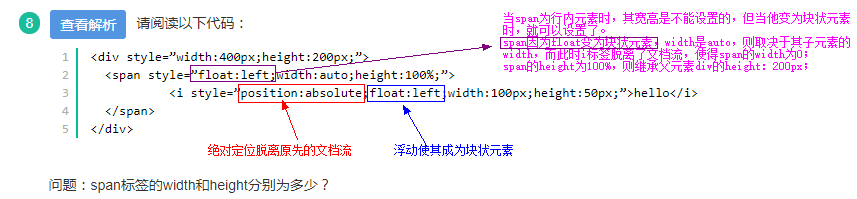

牛客网错题集



标准盒子模型 ＝ margin + border + padding + content （content = width | height）
IE盒子模型 ＝ margin + content （content = border + padding + width | height）


搜狗浏览器是双核的，双核并不是指一个页面由2个内核同时处理,而是所有网页（通常是标准通用标记语言的应用超文本标记语言）由webkit内核处理,只有银行网站用IE内核


datalist 元素规定输入域的选项列表。 keygen 元素的作用是提供一种验证用户的可靠方法。 output 元素用于不同类型的输出


为什么会有跨域限制？
主要是为了安全考虑。
CSRF（cross-site request forgery跨站请求伪造）
CORS（cross -origin resource sharing跨域资源共享）


在js中存在这样一种机制，在程序正式执行之前，会将var声明的变量和function声明的函数预读到当前作用域的顶部


到24题